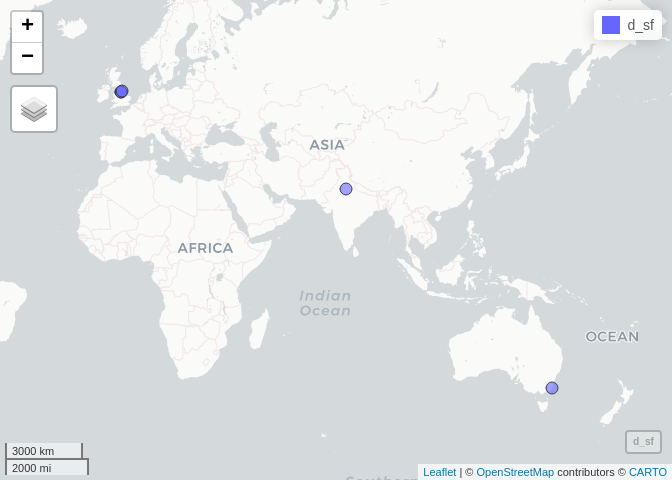
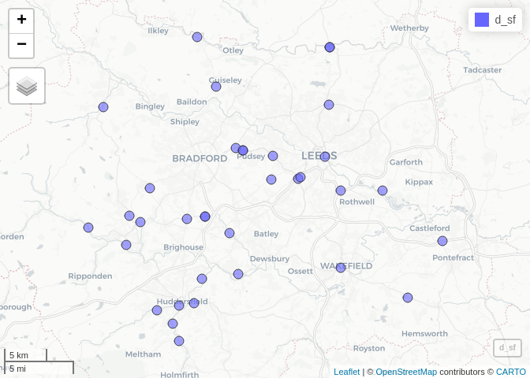

Install the package from GitHub:
remotes::install_github("ITSLeeds/opsnap")Using github PAT from envvar GITHUB_PAT
Skipping install of 'opsnap' from a github remote, the SHA1 (f3952b21) has not changed since last install.
Use `force = TRUE` to force installation── Attaching core tidyverse packages ──────────────────────── tidyverse 2.0.0 ──
✔ dplyr 1.1.4 ✔ readr 2.1.5
✔ forcats 1.0.0 ✔ stringr 1.5.1
✔ ggplot2 3.4.4.9000 ✔ tibble 3.2.1
✔ lubridate 1.9.3 ✔ tidyr 1.3.1
✔ purrr 1.0.2
── Conflicts ────────────────────────────────────────── tidyverse_conflicts() ──
✖ dplyr::filter() masks stats::filter()
✖ dplyr::lag() masks stats::lag()
ℹ Use the conflicted package (<http://conflicted.r-lib.org/>) to force all conflicts to become errors
u = "https://www.westyorkshire.police.uk/sites/default/files/2024-01/operation_snap_oct-dec_2023_0.xlsx"
d = opsnap:::download_and_read(u)
names(d) [1] "REPORTER TRANSPORT MODE" "OFFENDER VEHICLE MAKE"
[3] "OFFENDER VEHICLE MODEL" "OFFENDER VEHICLE COLOUR"
[5] "OFFENCE" "DISTRICT"
[7] "DISPOSAL" "DATE OF SUBMISSION"
[9] "...9" "OFF LOCATION"
# [1] "REPORTER TRANSPORT MODE" "OFFENDER VEHICLE MAKE"
# [3] "OFFENDER VEHICLE MODEL" "OFFENDER VEHICLE COLOUR"
# [5] "OFFENCE" "DISTRICT"
# [7] "DISPOSAL" "DATE OF SUBMISSION"
# [9] "...9" "OFF LOCATION"
d_locations = d |>
dplyr::pull(`OFF LOCATION`) |>
head(10) |>
lapply(FUN = stplanr::geo_code)
# d_geocoded = d |>
# tidygeocoder::geocode("OFF LOCATION")
d_locations[[1]]
matrix(d_locations[[1]], ncol = 2)
d_locations_lengths = sapply(d_locations, function(x) {
length(x)
})
d_sf = lapply(d_locations[d_locations_lengths > 0], function(x) {
sf::st_point(matrix(x, ncol = 2))
})
d_sfc = sf::st_sfc(d_sf) |>
sf::st_sf(crs = "EPSG:4326")
d_sf = sf::st_sf(
d |> slice(1:10) |> filter(d_locations_lengths > 0),
geometry = d_sfc |> sf::st_geometry()
)
mapview::mapview(d_sf)
DANGEROUS DRIVING
1
ME82004 Drive vehicle and enter motorway at prohibited place
1
ME82017 Prohibited Traffic in offside lane
1
RR84087 Use prohibited vehicle on road subject to restriction/prohibition
1
RT88515 Drive m/v with child passenger 3-13 - rear seat not wearing seat belt
1
RT88520 Number of passengers/manner carried likely to cause danger
1
RT88973 Drive on motorway fail to comply with red / green arrow / lane closure signals
1
TS16005 Stopping vehicle in Zebra / Puffin pedestrian crossing controlled area
1
ZP97005 Overtake within limits of Pelican crossing
1
RT88469 Driving on footpath/bridleway/restricted by-way
2
RT88751 Contravene mandatory direction arrows
2
RT88756 Fail to comply with Stop sign
2
ME82015 Draw trailer in offside lane of motorway
3
RT88508 Leave vehicle/trailer in dangerous position
3
RT88751 Motor vehicle fail to comply with a non-endorsable traffic sign other (specify)
3
ZP97004 Fail to comply with Red Light Pelican crossing
4
ZP97001 Stop vehicle within limits of Pelican crossing
5
RC86814 Driver not in proper control of vehicle
6
ZP97003 Stop within controlled area of Pelican crossing
7
RT88971 Fail to comply with Red traffic light
8
RT88751 Contravene Give Way sign
10
RR84171 Vehicle contravene local traffic order other than parking (e.g. bus lane)
12
RT88760 Fail to comply with solid white lines
13
ME82009 Driving on hard shoulder of motorway
14
RT88966 Motor vehicle fail to comply with endorsable S36 traffic sign
45
RV86019 Use a handheld phone / device whilst driving a motor vehicle on a road
73
RT88975 Drive motor vehicle fail to comply with red / green arrow / lane closure traffic light signals
193
RT88575 Drive without due care and attention
279
RT88576 Drive without reasonable consideration to others
348
N/A
546
d |>
# Reduce nchar of OFFENCE
mutate(OFFENCE = stringr::str_sub(OFFENCE, 1, 60)) |>
group_by(OFFENCE) |>
# Count number of rows in each group
mutate(n = n()) |>
filter(n > nrow(d) / 50)|>
ggplot() +
geom_bar(aes(OFFENCE)) +
# Make x labels vertical
theme(axis.text.x = element_text(angle = 90, hjust = 1))